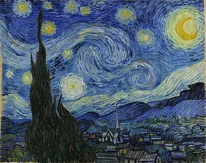
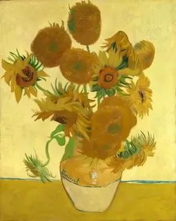
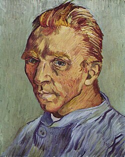
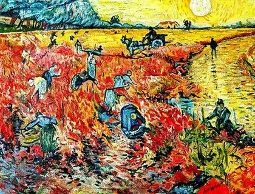
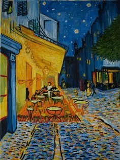
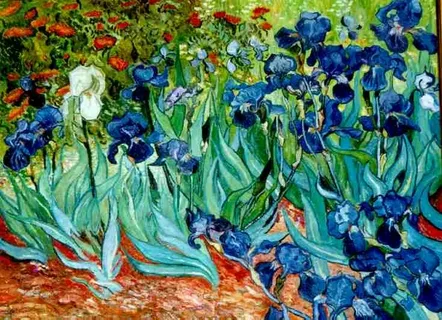
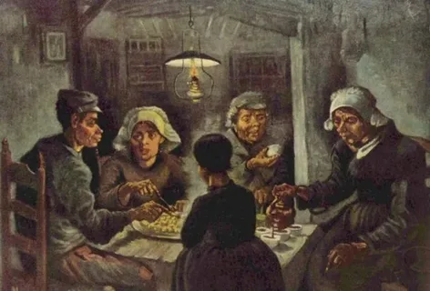
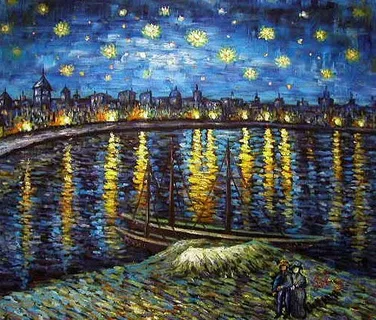
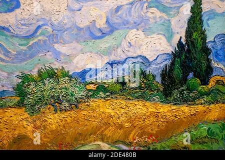

Знаменитые картины Винсента Ван Гога
Звёздная ночь (1889)

Написана в психиатрической больнице в Сен-Реми. Символизирует внутренний мир художника.
Подсолнухи (1888–1889)

Серия из 11 картин, ставшая символом творчества Ван Гога.
Автопортрет (1889)

Один из многочисленных автопортретов художника, отражающий его внутренний мир.
Красные виноградники в Арле (1888)

Единственная картина, проданная при жизни художника за 400 франков.
Ночная терраса кафе (1888)

Одна из первых картин с изображением ночного неба. Ван Гог не использовал чёрную краску.
Ирисы (1889)

Написана во время пребывания в психиатрической лечебнице в Сен‑Реми. Композиция вдохновлена японской гравюрой.
Едоки картофеля (1885)

Ранняя работа в тёмных тонах, изображающая крестьянскую семью за ужином.
Звёздная ночь над Роной (1888)

Написана в Арле, изображает ночной пейзаж на берегу реки Роны.
Кипарисы (1889)

Кипарисы были одним из любимых мотивов Ван Гога в период его пребывания в Сен‑Реми.